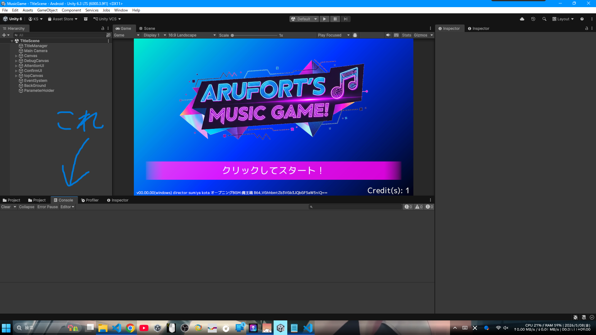
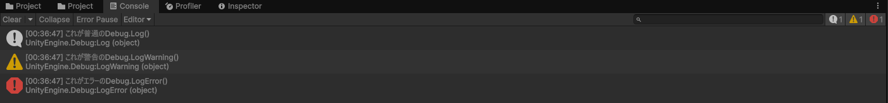

Debug.Log()とは デバッグ*1 のときにプログラムの動きを画面に出して確認できる機能。
これはあってもなくてもゲームの進行には影響しないからわざわざ書かなくてもいい
そしてゲームが完成したとき、スマホやPCで遊ぶプレイヤーには原則見えない*2
→つまり自分のために"プログラムがちゃんと動いてるか"のメモを残せる機能
例えば、どうしてもバグが起きる(思ってる動きじゃない)とき、"どこかでプログラムを書くのをミスったのは確定なんだけど、そのどこかがわからない"っていうのが定番。
そのどこかを特定するためにプログラムがどの値をどんなふうに処理してどこでズレた(バグった)のかが目でみて追えるようにするのがDebug.Log()*3
デバッグログは、Consoleタブから見ることができる。

※画像1 (タップで拡大)
Consoleタブにデバッグログや、プログラムが吐いたエラー、その他の情報が全部集まってくる。
コードの中で Debug.Log(ここに出力したい情報); を書くだけ

※画像2 (タップで拡大)
Debug. のあとにLogと続ける(Debug.Log();)とすると、普通の情報の見た目で出てくる。
Debug. のあとにLogWarningと続ける(Debug.LogWarning();)とすると、警告の見た目で出てくる。
Debug. の後にLogErrorと続ける(Debug.LogError();)とすると、エラー吐いたときの見た目で出てくる。